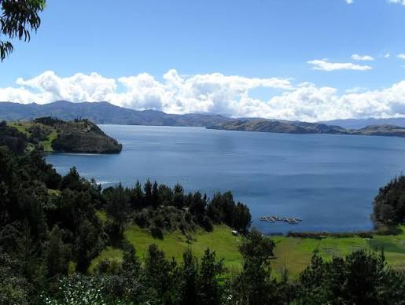
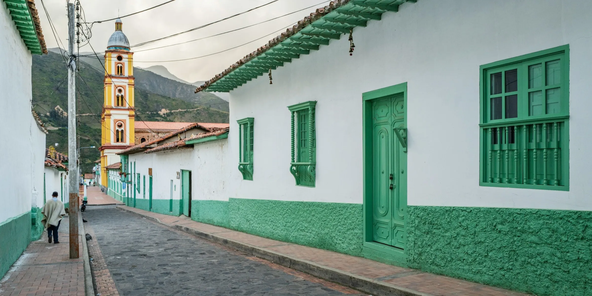

Calles empedradas, arquitectura colonial y una plaza llena de historia.
Pueblos históricos, lagunas, montañas y paisajes para recordar.
Calles empedradas, arquitectura colonial y una plaza llena de historia.

Un paisaje de agua y montaña ideal para descansar y disfrutar de la naturaleza.

Páramos, senderos y montañas para quienes buscan aventura y aire puro.

Historia, arquitectura colonial y cultura en la capital de Boyacá.

Aguas termales, paisajes tranquilos y el tradicional queso Paipa.

Calles coloniales, artesanías y senderos hacia el páramo de Ocetá.

Artesanías, cerámica y calles llenas de color y tradición.

Cultura muisca, historia y una puerta de entrada al Lago de Tota.

Paisajes del Lago de Tota, Playa Blanca y naturaleza para disfrutar.
Encuentra una experiencia para tu próximo viaje.
Pueblos coloniales, museos y lugares patrimoniales.
Lagunas, páramos, montañas y senderos.
Actividades al aire libre para explorar Boyacá.